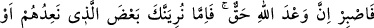
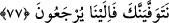

O, hüzün ve imkânsızlık yüzünden kımıldamamaktadır.
O bir dediği iki edilmeyen Firavun’un imkânlarını elde etse...
O zaman Firavunluk için yüzlerce Mûsâ ve Harun’un yolunu keser.
O ejderha, yoksulluk yüzünden bir kurtçuk gibidir.
Sivrisinek, mal ve makam sayesinde atmaca kesilir.
Her önüne gelenin bu arzuya ulaşması mümkün mü?
Ejderhayı öldürmeye Mûsâ gerek.
Mûsâ’nın ejderhasını gören yüz binlerce insan
Hezimete uğrayıp öldü.
Demek istiyor ki: Nefis büyük bir yılana benzer. Onun özelliklerini öldürüp ondan
uzaklaştırmak kolay değildir. Aksine yüksek bir himmet ister; ara vermeden ve ısrarla
çalışmak ister.
77. Onun için (Resûlüm), sen sabret! Şüphesiz Allah’ın vaâdi gerçektir. Onlara
söz verdiğimiz azabın bir kısmını ya sana gösteririz, yahut seni daha önce vefat
ettiririz. Nasıl olsa onlar bize döneceklerdir.
Ey Muhammed! Kendileri için hazırlanan azapla karşılaşıncaya kadar, sen bu
müşriklerin âyetler hakkındaki cedelleşmeleri gibi sebeplerden kaynaklanan
eziyetlerine “sabret. Şüphesiz Allah’ın” bunlara azap edeceğine dâir “verdiği söz”
kesinlikle olacak bir “gerçektir. Onlara söz verdiğimiz azâbın bir kısmını” yâni
öldürülmelerini ve esir edilmelerini “sana gösteririz.”
“Yahut” göstermezden “önce seni vefat ettiririz. Nasıl olsa onlar bize
döneceklerdir.”
Şart mânâsına göre bu son kısım, “vefat ettirirsek”in cevabı olup şu anlama gelir: O
azabın gelmesinden önce seni öldürürsek, bunlar kıyâmet günü başkasına değil, nasılsa
bize getirilecekler! Biz de cezâlarını o zaman veririz!
Onları hiçbir şekilde bırakmayacağız. Hak Sübhânehû ve Teâlâ, öldürme, esaret,
kıtlık vb. kâfirlerin tadacağı azabı bu dünyada âlemlerin Efendisine (a.s.) gösterdi.
Onların karşılaşacakları azâbın gerisi âhirette olacaktır.
Dostlar her iki âlemde de mutlu ve mes’ûd hayat sürecekler. Düşmanlar ise bu
dünyada da öbür dünyada da meşakkat ve gam çekecekler.
Allah dostlarının âhirette mutlu olacakları âşikârdır. Dünyadaki mutluluklarına
gelince, bunun sebebi de şudur: Gerçek onların elindedir. Fakirlikte, zenginlikte,
sağlıkta, hastalıkta… Hâsılı her durumda Allah’tan râzıdırlar. Hiçbir şey kendilerini